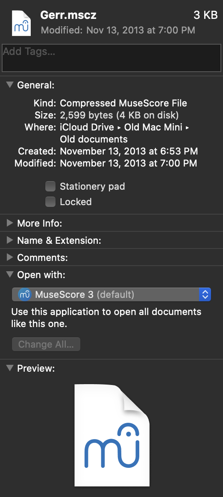
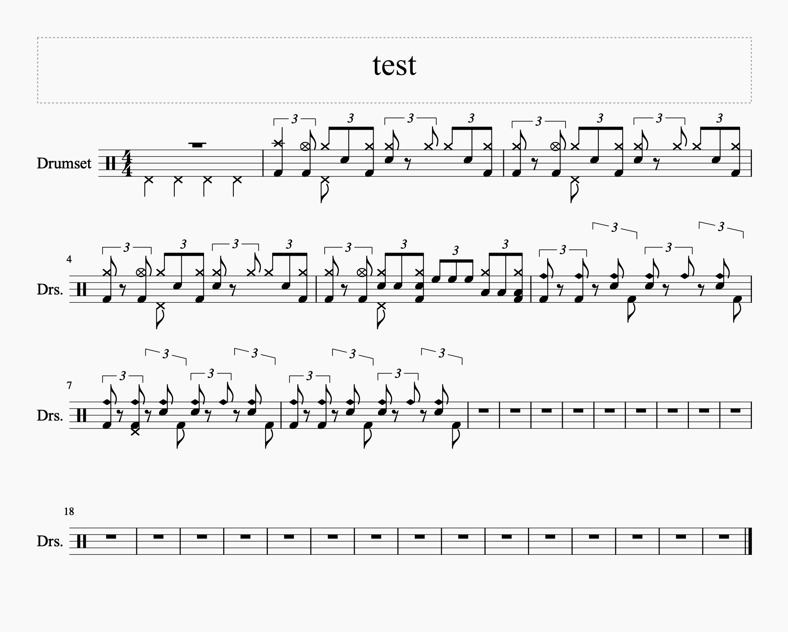
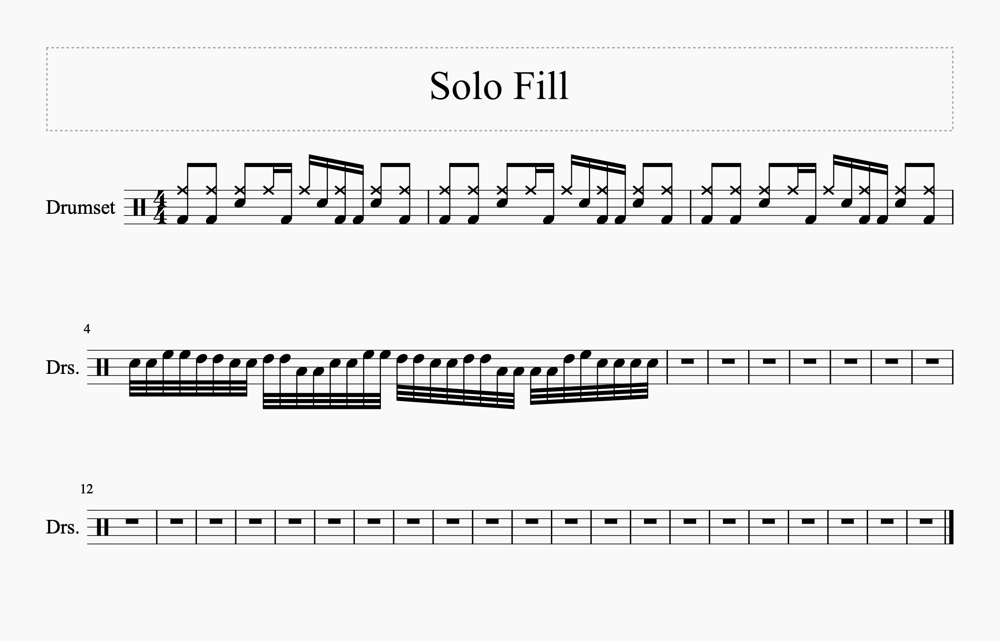
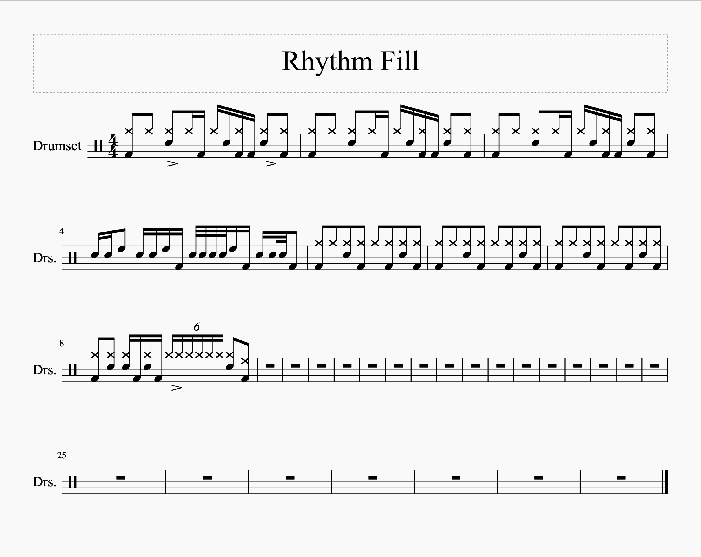

Drum Groove: “Grapevine Fires” — Jason McGerr with Death Cab For Cutie

I haven’t done a “groove of the day/week/month” kind of post on my site yet, but I have something in that vein for you today. While I don’t really know how often I’ll do these, I want to get this particular groove clear for everyone: “Grapevine Fires” by Death Cab For Cutie, off of Narrow Stairs with Jason McGerr on drums. The tune is one of Death Cab’s best, and Jason plays an interesting take on the Purdie shuffle. The key to the groove is the hi hat pedal heard on the “a” after 1.
I know the album’s over ten years old, but there are some drummers online that have posted themselves covering the track and playing a standard Purdie shuffle. I won’t name anybody… but you who I’m talking about: the kind of drummer that throughly dissects Animals as Leaders tunes for a note-for-note play through, but goes on autopilot for the “easy” stuff.
Ahem. Sorry, didn’t mean to get angry here, but Jason deserve covers that do justice to his part. For crying out loud, there’s a video of him explaining the damn shuffle. People! Whatever, everyone makes mistakes, even those with a bunch of YouTube subs — hell, even Drum! Magazine got it wrong apparently. You can’t ever make assumptions that another drummer is thinking and playing like you would be. One of the many reasons why I don’t think drum covers are worth your time.
Keep in mind that, while Jason’s demo has him accenting the “a” after three, he ghosts it on the record. Just refer to the transcription.
As a fun piece of personal trivia, figuring out this groove is one of the first things I ever did with MuseScore. My original file dates to November 13, 2013:
It just turned 7 years old this past Friday! However, this is not the very first thing I did. That honor goes to “Test”, from October 27, 2013:
I think it’s supposed to be “Fool In The Rain”. After all, I did just get into Zeppelin that year. Other early projects before the Jason McGerr file include “Solo Fill” and “Rhythm Fill”. I really don’t know what they are supposed to be:
 I don’t think I’ll ever remember. I have a bunch of random MuseScore files on an old backup drive from my high school Mac Mini. Many of them definitely make me wonder what I was thinking when I cooked them up.
Sorry for the brief interlude in the Buddy Rich posts. I’ll pick it up next week to finally close out that series.
“Grapevine Fires” on Spotify and Apple Music.
Posted on November 15, 2020
Tags: 2020 • Drum Groove • Jason McGerr • Death Cab For Cutie